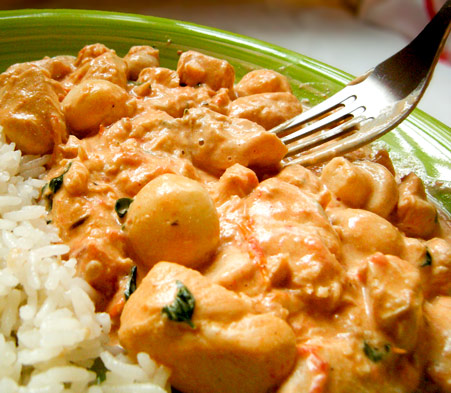

Culinaria
Todas as Exigencias de uma boa Cozinha

frango
Creme de leite
cebola
alho e sal
Refogue o frango com Alho e Cebola
Cozinhe em fogo medio ,juntamente com azeite
Leve ao fogo medio
Assim que der o ponto deve ser desligado